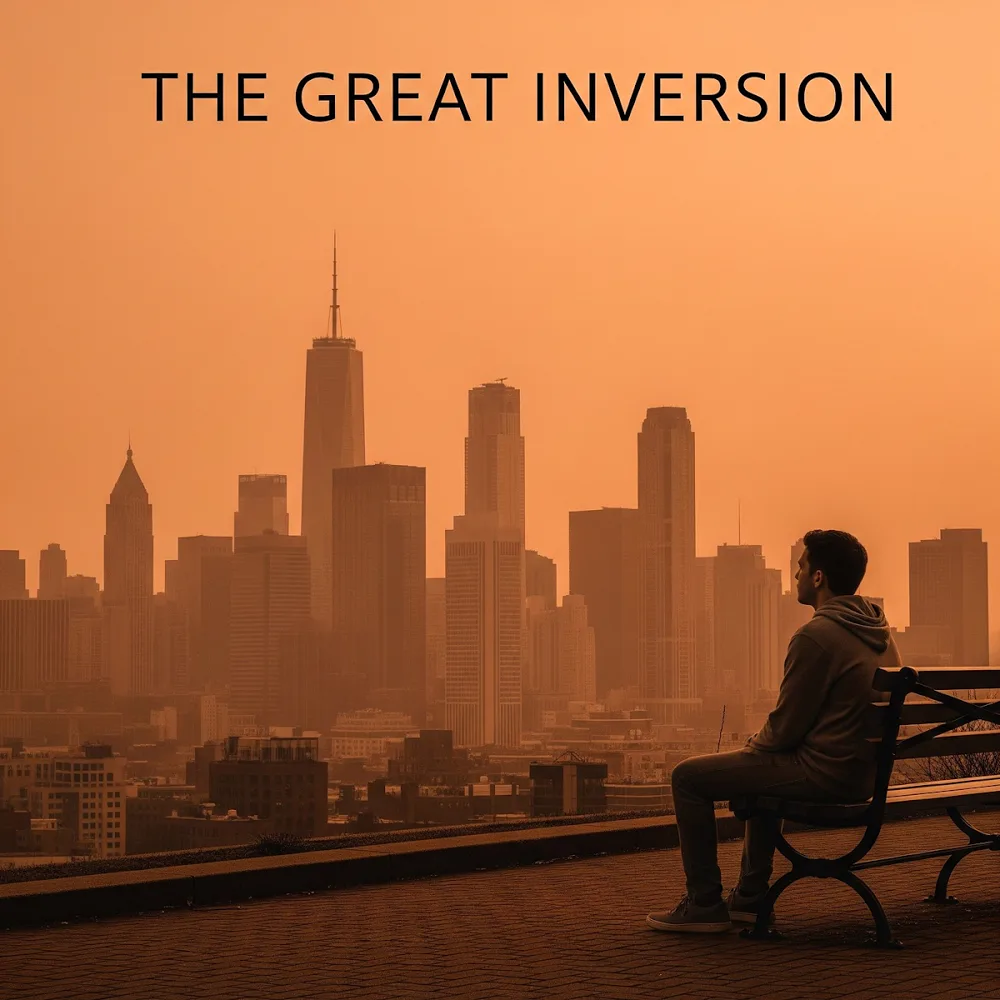

THE GREAT INVERSION
An Antidote to the Decline of Ambition & Modern Malaise
The retreat from traditional ambition is not a mystery of the soul but a matter of accounting—a rational adaptation to a society where the old rungs of the economic ladder have snapped.
The Great Inversion is an intentional 3-movement concept album by The Shady River Bard. It diagnoses the mathematical realities of lost upward mobility, prime-age male detachment, and digital dopamine pacification, before charting an empowering counter-current toward FIRE, intentional minimalism, sovereign craft, and local community.
The Narrative Roadmap
The album travels from the quiet despair of a broken system, through the specific human costs of retreat, culminating in the discovery of sovereign, authentic ways of living. Click any movement below to jump directly to its songs.
The Diagnosis
Setting the scene: the 50% upward mobility coin flip, impossible housing price-to-income moats, young men retreating to basement gaming citadels, and algorithmic digital anesthesia.
The Human Cost
Workplace boundary survival ("Quiet Quitting"), romantic delay, the weighty decision not to bring children into an unstable world, and the album's contemplative turning point.
The Redefinition
The counter-currents: intentional minimalism, the defiant mathematics of the FIRE movement (4% Rule), sovereign craft in the creator economy, localism, and the grand closing anthem.
The Five Framework Pillars
Synthesizing economic research, labor economics, and neurological science into five structural pillars that underpin the songs of The Great Inversion.
The Inversion of Ambition
The American Dream is no longer about getting rich within the system, but about becoming independent from it. Ambition has turned from an outward climb to the inward construction of a sovereign life.
| Metric of Success | The Old Ambition (20th Century) | The New Ambition (21st Century) |
|---|
The 13 Songs & Formatted Lyrics
Explore the full acoustic and thematic journey. Click Show Lyrics on any track to reveal stanzas, vocal directions, and narrative context.